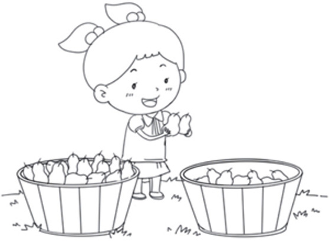
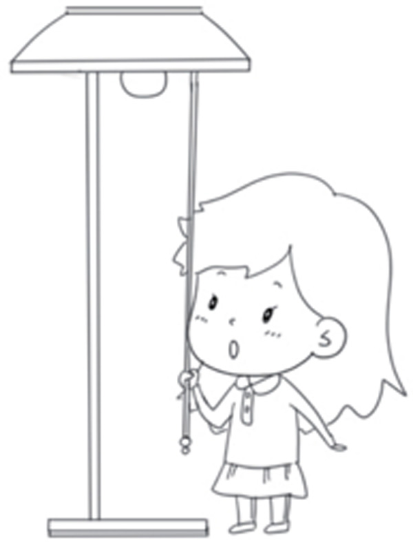
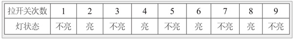
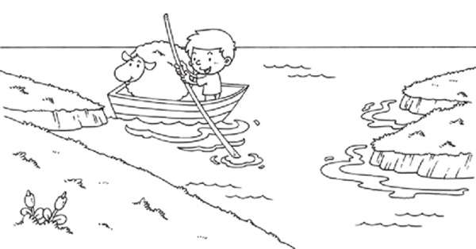
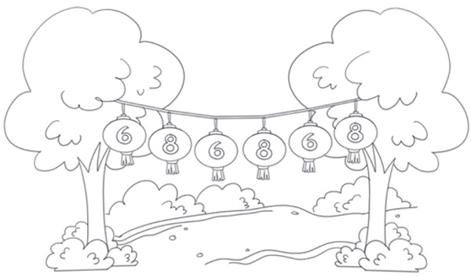
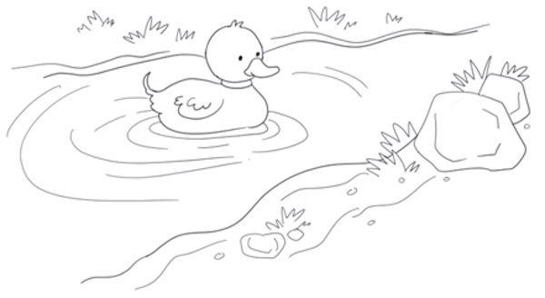

在数学上，1、3、5等叫作奇数，有时候也叫作单数；2、4、6等叫作偶数，有时候也叫作双数。用数群的概念来解释：把东西2个2个地数，最后正好数完，这样的数就是双数；如果2个2个地数，最后还多1，这样的数就是单数。
在5～7岁这个阶段，孩子已经能够掌握10以内的双数和单数，并逐步能够利用双数和单数的基本性质解决一些实际的问题，如开灯问题、往来问题等。如果更深入一点掌握单双数，便涉及进制，由此可以引导孩子掌握进制的相关知识，很多利用单双数解决的问题，实际上就是二进制问题。
在遇到单双数问题时，经常用到下面的7个规律。
◎ 单数+单数=双数。
◎ 单数+双数=单数。
◎ 双数+双数=双数。
◎ 单数-单数=双数。
◎ 单数-双数=单数。
◎ 双数-双数=双数。
◎ 双数-单数=单数。
典型例题 1 有一筐梨，2个2个地拿，最后还剩1个，这筐梨原来的个数是单数还是双数？

2是双数，也就是说每一次拿的都是双数，由于“双数+双数=双数”，那么拿走的梨的个数是双数，剩下1个梨，最后是“双数+单数”，所以梨原来的个数是单数。
典型例题 2 晚上，莫妮卡在做作业的时候，停电了，莫妮卡去拉了4下开关，妈妈回来了，妈妈又去拉了5下开关。如果来电了，灯泡是亮着的还是不亮的？

我们使用表格来解决这个问题。

从上面的表格可以看出，莫妮卡拉了4下开关，妈妈拉了5下开关，一共拉了9下开关，因此来电的时候，灯泡是不亮的。
从这道题可以看出，灯泡亮与不亮，与灯泡的起始状态和拉开关的次数有关系：当拉开关的次数为双数时，灯泡的状态与起始状态一致；当拉开关的次数为单数时，灯泡的状态与起始状态相反。
典型例题 3 渡船在河的两岸之间来回地接送乘客，把渡船从河的一岸划到另一岸叫渡1次。如果渡船原来在河的北岸，渡了7次之后，船在河的北岸还是南岸？

使用例题2总结的规律来解题，原始状态下，渡船在河的北岸，渡了7次，由于7是单数，所以渡船目前的状态和原始状态相反，渡船在河的南岸。
其实对于类似这样的问题，只要是单数，那么最终的效果就跟1次是一样的，只要是双数，最终的效果就跟0次是一样的。
1.有一筐橘子，如果4个4个地拿，最后还剩1个，这筐橘子原来的个数是单数还是双数？
2.过节了，公园里挂上了灯笼，每个灯笼上都有一个数字，依次是6、8、6、8、6、8……那么第19个灯笼上的数字是多少？

3.放学了，马克不知道家里停电了，回家就想开灯，他拉了好几下开关，灯都没有亮，晚上来电的时候，灯泡亮了。妈妈问马克拉了几下开关，马克说可能是7下，也可能是8下，你知道马克拉了几下开关吗？
4.一个运动员在操场上折返跑，他从起点开始跑，从起点跑到终点算跑1次，从终点跑到起点也算跑1次，他一共跑了21次，那他现在在起点还是终点？
5.小鸭子原来在河的东岸，我们把小鸭子从河的东岸游到西岸叫游1次，在游了几次后，小鸭子停在了河的东岸，你知道小鸭子游了单数次还是双数次吗？

6.16个人排成1队，从左到右按照1、2、1、2报数，如果要让报1的人每人拿1个篮球，那么要准备几个篮球？